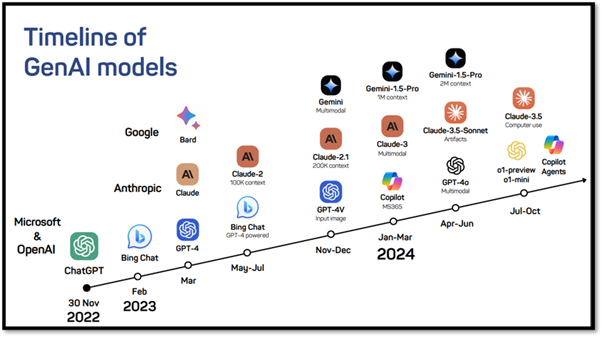

What is Generative AI?#
Generative AI Explained#
Before you learn how you can use GenAI tools to assist you in the literature research and writing process, it is important to have a basic understanding of how GenAI works. GenAI is short for generative artificial intelligence and, to put it very simply, refers to computer systems that execute tasks that are typically performed by humans as they require human intelligence, and by doing so create new content.
An important principle of GenAI is that it doesn’t understand what it is doing. Rather, it generates information based on input from a user and a set of rules. An explanation that is often used is John Searle’s Chinese Room Experiment. Watch this video to learn about this thought experiment.
In this analogy, the question written by the person outside the room is the prompt you write, the room is the GenAI tool you use, the book with instructions are the rules that the tool uses, and the response from the person inside the room is the GenAI output.
About the rules: a lot of the GenAI tools that are currently thriving make use of Large Language Models (LLMs) that work based on word prediction. Watch the video below to learn more about how LLMs use word prediction to generate output.
"How Do Large Language Models Work?" by ILLC Science is licensed CC-BY.
Different GenAI tools make use of different LLMs. For example, ChatGPT as of 2025 uses GPT-5. Since ChatGPT emerged in 2022 other LLMs have emerged, for example Claude-3.5 and Gemini-1.5-Pro.

Timeline of GPT-models by Aster Zhao is licensed CC-BY-NC-SA from Hong Kong University of Science and Technology.
Tools like Copilot, ChatGPT, Claude and Gemini can be seen as interfaces that use one of these LLMs to perform tasks. There are differences between these tools in what the interface looks like, what LLM the tool uses and what sources it draws from, as well as what you can use it for. Since there are a lot of different GenAI tools with different purposes, it is important to select a GenAI tool that aligns with your goals. In part 2 of this book, you will learn more about the differences between general and academic tools and how you can select the most suitable GenAI tool for specific steps in the research and writing process.
Limitations and Considerations#
GenAI tools have a great potential, especially because they can perform tasks way faster than humans can. There are however some important limitations that you should be aware of before using GenAI, especially for research purposes.
As mentioned in the video about the Chinese Room experiment, a GenAI tool doesn’t know what it is doing. It simply follows the rules that it was trained with, but it is unaware of the content it works with. Because of that, a GenAI tool does not necessarily generate content that is true. Some scholars would even go as far as saying that truth in GenAI output is a coincidence: it sometimes happens to generate truthful content. Therefore, you should never take the output for granted. Instead, always critically check the output and compare it with ‘traditional’ sources like scientific journal papers.
GenAI tools are trained with real-life data and therefore can reflect and amplify biases from human thinking. For example, research has shown that GenAI tools are often biased against women and people of colour. Other biases, for example confirmation bias (the tendency to search for and favour information that confirms your beliefs), can also affect the data that is used for training the GenAI tool, and therefore also affect the output. So, also from the perspective of potential biases, it is important to always critically check the GenAI output.
GenAI tools are trained with data that is publicly available. However, the authors of the texts that are used for training purposes did not give permission for this. Although GenAI tools do not typically copy exact passages, they do extract patterns, styles and ideas. This leads to a grey area of potential copyright infringement. In addition, it is often unclear how GenAI tools use the input (prompts) from users. These could also be (and often are) used for training purposes. It is therefore important to never insert personal details or confidential information in GenAI tools.
Completely outsourcing tasks to GenAI tools is not smart, not only because of the possible inaccuracies and biases in the output, but also because it leads to overreliance on GenAI. Overreliance, in turn, can lead to loss of creativity and critical thinking skills. As you may have noticed yourself, GenAI tools often generate texts with a typical, one could say flavourless, language. Simply copy-pasting GenAI output results in a text with a generic style, while readers want to hear your voice. In addition, when using GenAI tools, your own critical thinking skills are essential to evaluate the output. Because of the problems that overreliance on GenAI tools causes, it is important to use GenAI tools as an assistant, in addition to your own skill set.
The environmental impact of GenAI is significant: it uses great amounts of water and energy for running the models (i.e., responding to prompts) and training them. Although this is of course always a personal consideration, you could take this into account when you are considering using GenAI tools.
References#
Bender, E.M., Gebru, T., McMillan-Major, A., & Shmitchell, S. (2021). On the Dangers of Stochastic Parrots: Can Language Models Be Too Big? In M.C. Elish, W. Isaas & R.S. Zemel (Eds.), FAccT ’21: Proceedings of the 2021 ACM Conference on Fairness, Accountability, and Transparency, Canada, 3-10 maart 2021 (pp. 610-623). ACM. https://doi.org/10.1145/3442188.3445922
Faruqui, M., Tsvetkov, Y., Rastogi, P., & Dyer, C. (2016). Problems with evaluation of word embeddings using word similarity tasks. arXiv:1605.02276v3. https://doi.org/10.48550/arXiv.1605.02276
Jacobs, M. (2025). GenAI in Education [Interactive Book]. Retrieved August 19, 2025, from https://www.genaieducationbook.online/intro.html
Kucharavy, A. (2024). Fundamental limitations of generative LLMs. In A. Kucharavy, O. Plancherel, V. Mulder, A. Mermoud & V. Lenders (Eds.), Large Language Models in Cybersecurity: Threats, Exposure and Mitigation (pp. 55-64). Springer.
Naznin, K., Al Mahmud, A., Nguyen, M.T., & Chua, C. (2025). ChatGPT integration in higher education for personalized learning, academic writing, and coding tasks: a systematic review. Computers, 14, 53. https://doi.org/10.3390/computers14020053
Sun, Y., Sheng, D., Zhou, Z., & Wu, Y. (2024). AI hallucination: towards a comprehensive classification of distorted information in artificial intelligence-generated content. Humanities and Social Sciences Communications, 11, 1278. https://doi.org/10.1057/s41599-024-03811-x
Wang, C. (2024). Exploring students’ generative AI-assisted writing process: perceptions and experiences from native and nonnative English speakers. Technology, Knowledge and Learning. https://doi.org/10.1007/s10758-024-09744-3
Wei, X., Kumar, N., & Zhang, H. (2025). Addressing bias in generative AI: challenges and research opportunities in information management. Information & Management, 62(2), 104103. https://doi.org/10.1016/j.im.2025.104103